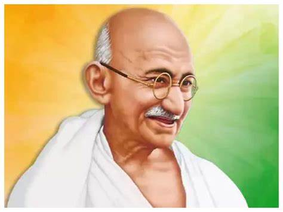

Mahatma Gandhi
1869 -1948
Campaign for India's independence
Mohandas Karamchand Gandhi (2 October 1869 – 30 January 1948) was the leader of the Indian independence movement against British rule. Employing nonviolent civil disobedience, Gandhi led India to independence and inspired movements for civil rights and freedom across the world. The honorific Mahātmā applied to him first in 1914 in South Africa is now used worldwide. In India, he is also called Bapu (Gujarati: endearment for "father") and Gandhiji. He is unofficially called the Father of the Nation.On 2 October 1869, Putlibai gave birth to her last child, Mohandas, in a dark, windowless ground-floor room of the Gandhi family residence in Porbandar city. As a child, Gandhi was described by his sister Raliat as "restless as mercury, either playing or roaming about. One of his favourite pastimes was twisting dogs' ears."[51] The Indian classics, especially the stories of Shravana and king Harishchandra, had a great impact on Gandhi in his childhoodBiographies
- October 2, 1869: ·Birth of Mohandas Karamchand Gandhi
- September 4, 1888: ·Gandhi leaves for England to study law.
- October 1899: ·Outbreak of Boer War (1899-1901) in South Africa. Gandhi organizes an ambulance corps for the British.
- Gandhi returns to India to attend the Indian National Congress. G.K. Gokhale introduces him to nationalist leaders.
- July 31, 1907: The Boer Republic Transvaal, now under the control of the British, attempts to register all Indians as members; Gandhi and others refuse to register. Their resistance efforts mark the first use of nonviolent non-cooperation by the Indian minority in South Africa, soon calledsatyagraha, or "soul-force."
- January 11, 1908: ·Gandhi is arrested and sentenced to two months in prison.
- August 15, 1947: ·Indian independence becomes official, as does the partition into two countries, India and Pakistan.
- August-December 1948: ·India dissolves into chaos and killings, as Hindus and Muslims flee for the borders of India and Pakistan.
- January 30, 1948: ·Gandhi is assassinated by Nathuram Vinayuk Godse, a Hindu nationalist.